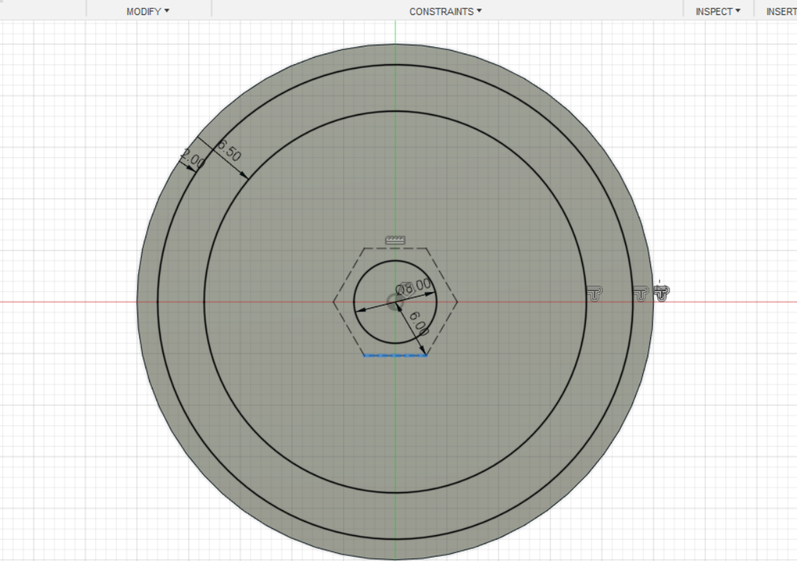
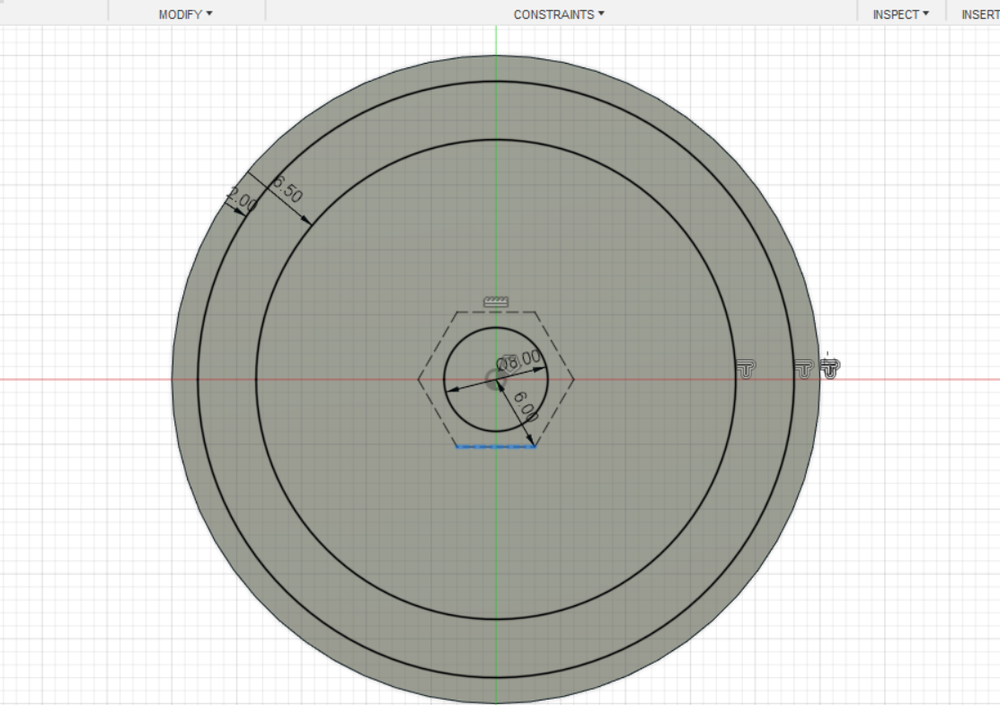

HOME
Week 3:3D Printing

This week I have been trained to use the 3D printers to complete the assignment. First, a 3D modeling program is needed called Fusion360 this will allow me to create models that can be transferred over to the 3D printers. After downloading Fusion360 I follow the tutorials put forward to allow me to learn the program.
The obvious first step would be opening up the program where I'm met with the interface I then right-clicked the bottom square and created a sketch after the sketch is created I used the circle and rectangle tool to make this shape: 

Shortly after I used the extrude tool and pulled the shapes upward turning the 2D shapes to 3D.
Next I created a sketch on my 3D shape which I would then extrude to create the final shape of the first tutorial.


Next, I started the second tutorial where I learned how to use constraints these constraints will allow me to define objects changing shapes in the sketch from having blue lines outlining to black lines on the defined object. I start with a circle defined at a 50mm distance. 
Afterward, I would create a rectangle that would have its sides constrained to the circle, meaning that the sides that are defined cannot move away from the circle. The height can change as it's not defined but the width can't change. 

To further define the sketch I would create a 30mm line from the center of the circle I would use to define the rest of the rectangle. Now that the rectangle is fully defined I would extrude the shape after deleting the top half of the rectangle to make this shape ending tutorial 2. 

I would play around with fusion360 before I was able to move onto the next tutorial. After getting comfortable I started the next tutorial of making a radioactive symbol, I started on a new project page by sketching out a circle base that would become extruded by 2.5 mm 
I would then create three more defined circles to help create the design of the radioactive. The center circle would be used to get the correct placement for a hexagon using the construction feature to allow me to more easily design the symbol.  

The next step would be to create six lines around the hexagon these lines would be vital in the design process as if defined would space out perfectly to finish the sketch. The construction lines don't extrude so they didn't get in the way while pulling up the desired portions of the sketch.
Next, I would simply color the radioactive symbol to prepare for my next project.
I would decide to create the chemical symbol rather than the biohazard option. Firstly I would take a screenshot of the image from the tutorial where I would then sketch out the proportions. This allows me to get a better understanding of what will be done in the designing process. 

I again started by defining a circle which I would extrude by 2.5 mm. I would then get into the process of transferring what I had designed onto the extruded circle. Unfortunately, I got too sucked into my recreation I didn't take as many screenshots as the radioactive symbol but it should be clear that I've used all the skills learned in the tutorials to sketch out something that should be able to extrude out into the chemical symbol.
After filling in the gaps in the last image I successfully was able to extrude a symbol that highly resembles what I was aiming for. All I had to do next was color my design and export the file as a .stl so that I can print out what I've made. 

The file would be transferred over to a lab computer and inserted into a program called Prusaslicer. I would then again forget to take more pictures but still making sure the preview of my print was good until it was ready to be printed after selecting which printer I wanted to use. The file was exported to a USB that would get plugged into the designated 3D printer. The printer got prepared by preheating the machine to change the filament used. Afterward, my design was ready to be printed. The print was successful on the first try and my print was finished.